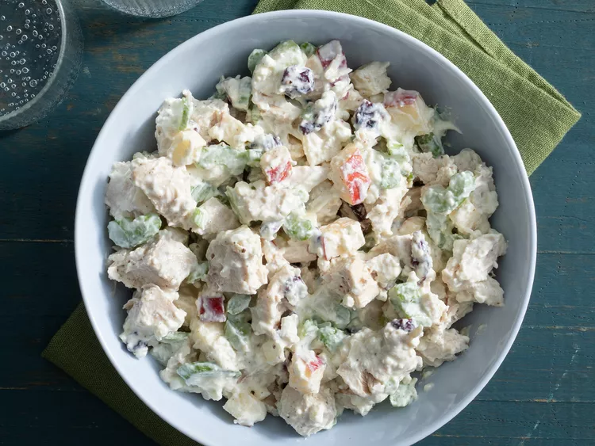

Home
Healthy Chicken Salad

Description
This healthy chicken salad recipe is made with a mixture of Greek yogurt and cottage cheese instead of regular mayonnaise,
resulting in a healthier version that's still creamy and delicious but higher in protein. Apples and dried cranberries add a sweet-tart flavor,
while chopped pecans provide textural interest in every bite. Serve it on crackers, on a croissant, in a pita, or grab a fork and just dig in!
Ingredients
- 1 (6 ounce) container fat-free Greek yogurt
- ½ cup low-fat cottage cheese
- ½ cup chopped celery
- ½ cup diced apple
- ¼ cup sweetened dried cranberries
- 2 tablespoons chopped onion
- 2 tablespoons chopped pecans
- ½ tablespoon Dijon mustard
- 1 ¼ cups cubed, cooked chicken
- salt and ground black pepper to taste
Steps
- Stir Greek yogurt, cottage cheese, celery, apple, cranberries, onion, pecans, and Dijon mustard in a bowl until well combined.
- Mix in chicken. Season with salt and pepper.
- Serve hot and enjoy!